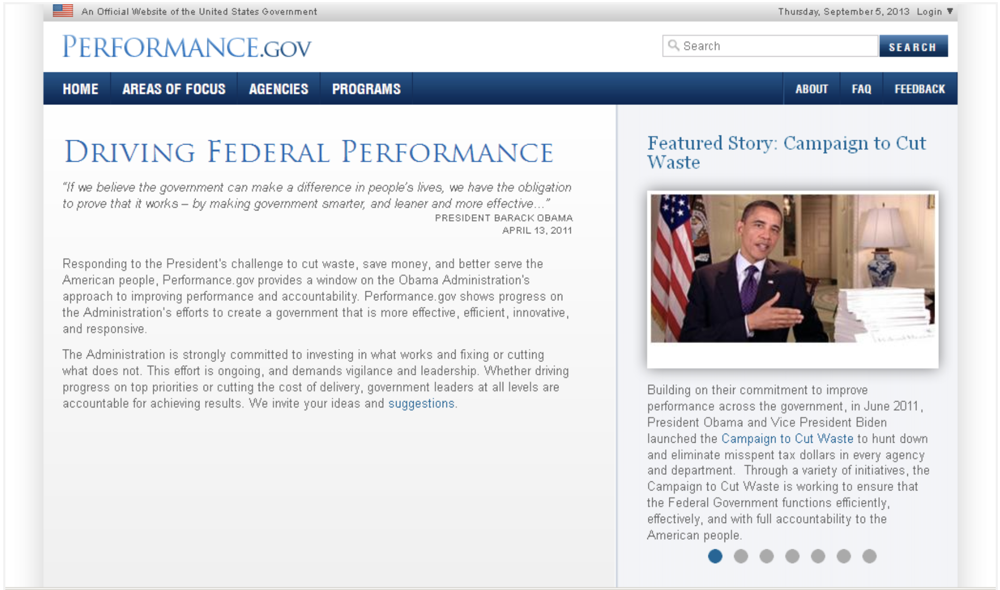
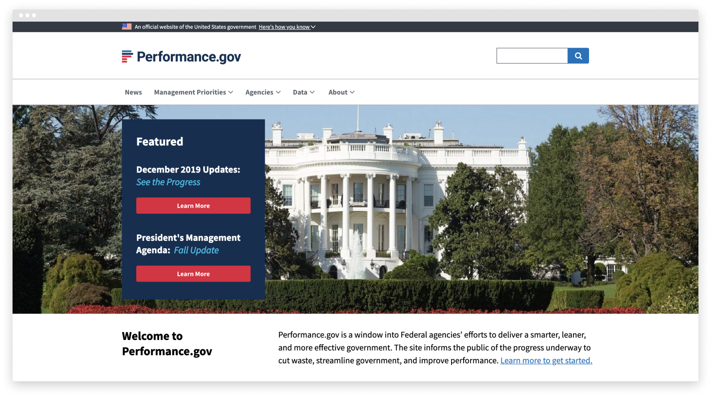

The Problem
The objective of Performance.gov is to inform the public of all the progress being made in the White House. With that being said, there is a ton of information to take in, to organize, and to present to the public in a seamless way. Previously, the way Performance.gov had shown the data was confusing, messy, and archaic.
The goals were to find specific pain points from user research, to analyze and restructure the information architecture in a way that was clear, and to update the outdated visual theme to the new government design standards.
The goals were to find specific pain points from user research, to analyze and restructure the information architecture in a way that was clear, and to update the outdated visual theme to the new government design standards.
Before

After
